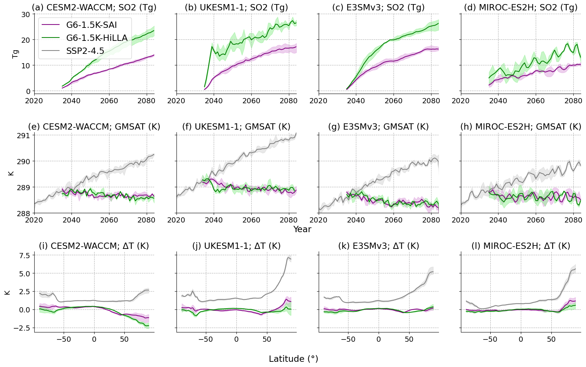
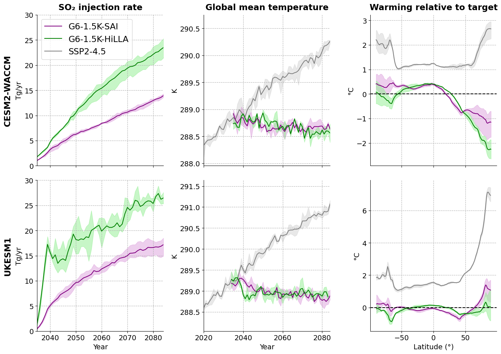

## Alistair Duffey, Feb 26
G6-1.5K- cloud data workflow example#
…………
notebook reads in data G6-1.5K-SAI and -HiLLA simulations from Reflective Cloud Hub S3 buckets, across four models, to plot a summary of SO2 injection and temperature impacts
…………
It produces a summary plot for Visioni et al., 2026 (The Geoengineering Model Intercomparison Project (GeoMIP) contribution to CMIP7)
…………
Runs on the Reflective CLoud Hub, and requires (1) Utils.py (2) prior re-gridding of E3SM data (see steps in Regrid_E3SM_data.ipynb - also stored on the Cloud Hub under /shared/testing/Regrid_E3SM_data_test_AD.ipynb)
…………
Note : the workflow here is quite manual for reading in the data. We are developing an intake catalogue tool to make life easier, so look out for future versions whichdo the below with less effort..
## packages for cloud data intake:
import s3fs
import fsspec
## packages for analysis
import pandas as pd
import xarray as xr
import dask
import numpy as np
import matplotlib.pyplot as plt
from functools import reduce
import os
from Utils import weighted_annual_resample, spatial_mean, set_time_to_center_of_bounds
# i have had some dependency issues with s3fs/fsspec - try the line below to fix them..
#pip install --upgrade s3fs fsspec boto3 botocore
### file paths
miroc_base, miroc_members = 's3://reflective-persistent-prod-large/MIROC-ES2H/', ['r01', 'r02', 'r03']
ukesm_HiLLA_base, ukesm_HiLLA_members = 's3://reflective-persistent-prod-large/UKESM1-1/G6-1p5K-HiLLA/', ['r12i1p1f2', 'r2i1p1f2', 'r3i1p1f2']
cesm_HiLLA_base, cesm_HiLLA_members = 's3://reflective-persistent-prod-large/CESM2-WACCM/G6-1.5k-HiLLA/', ['r1', 'r2', 'r3']
#e3sm_HiLLA_base, e3sm_HiLLA_members = 's3://reflective-persistent-prod/alistairduffey/E3SMv3/regridded_combined/', ['v3.LR.ssp245.g6_hilla.sai.0101', 'v3.LR.ssp245.g6_hilla.sai.0151', 'v3.LR.ssp245.g6_hilla.sai.0201']
cesm_SAI_base, cesm_SAI_members = 's3://reflective-persistent-prod/alistairduffey/CESM2-WACCM/G6-1.5K-SAI/', ['r1', 'r2', 'r3']
ukesm_SAI_base, ukesm_SAI_members = 's3://reflective-persistent-prod/alistairduffey/UKESM1-1/G6-1.5K-SAI/', ['r1', 'r2', 'r3']
e3sm_SAI_base, e3sm_SAI_members = 's3://reflective-persistent-prod/alistairduffey/E3SMv3/G6-1.5K-SAI/', ['r1', 'r2', 'r3']
table='AMON'
miroc_G6HiLLA_T_files = [miroc_base + 'G6-1.5K-HiLLA/Amon/' + 'tas_G6-1.5K-HiLLA_{}.nc'.format(member) for member in miroc_members]
miroc_G6SAI_T_files = [miroc_base + 'G6-1.5K-SAI/Mon/' + 'SurfT_G6-1.5K-SAI_{}.nc'.format(member) for member in miroc_members]
miroc_ssp245_T_files = [miroc_base + 'G6-1.5K-HiLLA/Amon/' + 'tas_baseline_{}.nc'.format(member) for member in miroc_members]
e3sm_G6SAI_files = [ # these from are Walker Lee's archive from his preprint, available here https://zenodo.org/records/17613419
's3://reflective-persistent-prod/alistairduffey/E3SMv3/G6-1.5K-SAI/r1/tas/E3SM_v3.LR.ssp245.0101.g6.sai.TREFHT.203501-208412.nc',
's3://reflective-persistent-prod/alistairduffey/E3SMv3/G6-1.5K-SAI/r2/tas/E3SM_v3.LR.ssp245.0151.g6.sai.TREFHT.203501-208412.nc',
's3://reflective-persistent-prod/alistairduffey/E3SMv3/G6-1.5K-SAI/r3/tas/E3SM_v3.LR.ssp245.0201.g6.sai.TREFHT.203501-208412.nc'
]
# these are regridded already, via seperate notebook
e3sm_HiLLA_base = 's3://reflective-persistent-prod/alistairduffey/E3SMv3/regridded_combined/'
e3sm_HiLLA_members = ['v3.LR.ssp245.g6_hilla.sai.0101/regridded_TREFHT_203501_203912.nc',
'v3.LR.ssp245.g6_hilla.sai.0151/regridded_TREFHT_203501_203912.nc',
'v3.LR.ssp245.g6_hilla.sai.0201/regridded_TREFHT_203501_203912.nc']
e3sm_ssp245_members = ['v3.LR.ssp245_0101/regridded_TREFHT_201501_201912.nc',
'v3.LR.ssp245_0151/regridded_TREFHT_201501_201912.nc',
'v3.LR.ssp245_0201/regridded_TREFHT_201501_201912.nc']
Read in all the data#
We need to read in data formatted in various different ways, from various different places. The following set of cells do that. I have split this code up across many cells for easier debugging, it is not fast - takes a couple of minutes, and a few GB of memory. We read in 3 members each for 4 models, for 3 scenarios (SSP2-4.5, G6-1.5K-HiLLA and G6-1.5K-SAI), for near-surface air temp. data
## func to read in datasets to a list
def read_in_all_members_to_ds_list(input_file_paths_for_members, renamevar=None):
ds_list = []
for s3_path in input_file_paths_for_members:
# Open the dataset directly from the S3 URL using xarray
with fsspec.open(s3_path, mode='rb') as file:
ds = xr.open_dataset(file,
engine="h5netcdf",
chunks={}).load() # load to avoid "I/O on closed file" error later on
if renamevar:
ds = ds.rename({renamevar:'tas'}) # for consistency with others
ds = set_time_to_center_of_bounds(ds, time_bounds_name='time_bnds') # for CESM G6 data, monthly files are labelled by end of month not centre by default (why?!). This function sets t to centre of t_bounds
ds_list.append(ds)
return ds_list
### read in CESM data for SAI scenarios
# just use r2 and r3 for now, as r1 is split into two files. To improve..
cesm_G6HiLLA_T_files = [cesm_HiLLA_base+cesm_HiLLA_members[i] + '/' + table + '/b.e21.BW.f09_g17.SSP245-G6-1p5K-HiLLA.00{}.cam.h0.TREFHT.203501-208412.nc'.format(str(i+1)) for i in [1, 2]]
# apply for the cesm HiLLA case, takes a couple minutes becuase we are loading data into memory at this stage
cesm_G6HiLLA_T_datasets = read_in_all_members_to_ds_list(cesm_G6HiLLA_T_files, renamevar='TREFHT')
## repeat the above for the CESM G6SAI data:
cesm_G6SAI_T_files = [cesm_SAI_base+cesm_SAI_members[i] + '/' + table + '/CESM_b.e21.BW.f09_g17.SSP245-G6-1p5K-SAI.00{}.cam.h0.TREFHT.203501-208412.nc'.format(str(i+1)) for i in [0, 1, 2]]
# apply for the cesm SAI case
cesm_G6SAI_T_datasets = read_in_all_members_to_ds_list(cesm_G6SAI_T_files, renamevar='TREFHT')
## read in the miroc T data
miroc_G6HiLLA_T_datasets = read_in_all_members_to_ds_list(miroc_G6HiLLA_T_files)
miroc_G6SAI_T_datasets = read_in_all_members_to_ds_list(miroc_G6SAI_T_files, renamevar='SurfT')
miroc_ssp245_T_datasets = read_in_all_members_to_ds_list(miroc_ssp245_T_files)
## read in the UKESM G6-HiLLA data:
# different structure - multiple ncs in a base level directory for a given variable
ukesm_G6HiLLA_paths = [ukesm_HiLLA_base+ukesm_HiLLA_members[i] + '/apm/Amon/tas/' for i in [0, 1, 2]]
ukesm_G6SAI_files = [ukesm_SAI_base+ukesm_SAI_members[i] + '/AMON/' + 'UKESM_T1.5m_G6-1p5K-SAI.00{}.nc'.format(i+1) for i in [0, 1, 2]]
## define another read in function for UKESM G6-1.5K-SAI data as it has some weird features (the data sourced via Lee et al.'s zenodo does anyway)
def read_in_all_members_to_ds_list_UKESM_from_paths(path_list, SAI_rename_time_dims=False):
""" input: list of paths to bottom level directory for UKESM data on AWS bucket
output: list of opened datasets, each contianing the single merged dataset from multiple time-split .ncs
"""
ds_list = []
for path in path_list:
files = fsspec.open_files(f"{path}*.nc", mode='rb')
ds = xr.open_mfdataset([file.open() for file in files], #don't specify engine here as the .ncs for G6SAI are weirdly formatted
combine="nested", concat_dim="time", chunks={}).load()
if SAI_rename_time_dims:
ds = ds.isel(time=0).rename({'t':'time'}) # manual step to fix weird time dims
ds = ds.rename({'temp':'tas'}) # for consistency with others
ds = ds.isel(ht=0) # also get rid of the ht dimension which confuses things
ds_list.append(ds)
return ds_list
def read_in_all_members_to_ds_list_UKESM_from_files(file_list, SAI_rename_time_dims=False, rename_TREFHT=False):
""" input: list of file paths for UKESM data on AWS bucket
output: list of opened datasets, each contianing the single merged dataset from multiple time-split .ncs
"""
ds_list = []
for f in file_list:
with fsspec.open(f, mode='rb') as file:
ds = xr.open_dataset(file,
#engine="h5netcdf",
chunks={}).load()
if SAI_rename_time_dims:
ds = ds.rename({'t':'time'}) # manual step to fix weird time dims
ds = ds.rename({'temp':'tas'}) # for consistency with others
ds = ds.isel(ht=0) # also get rid of the ht dimension which confuses things
if rename_TREFHT:
ds = ds.rename({'TREFHT':'tas'})
ds_list.append(ds)
return ds_list
# read in the UKESM data
ukesm_G6HiLLA_T_datasets = read_in_all_members_to_ds_list_UKESM_from_paths(ukesm_G6HiLLA_paths)
ukesm_G6SAI_T_datasets = read_in_all_members_to_ds_list_UKESM_from_files(ukesm_G6SAI_files, SAI_rename_time_dims=True)
# read in the E3SM data
e3sm_G6SAI_T_datasets = read_in_all_members_to_ds_list_UKESM_from_files(e3sm_G6SAI_files,
SAI_rename_time_dims=False,
rename_TREFHT=True)
## repeat for E3SM
## test reading in one of the combined regridded files on persistent-prod
e3sm_G6HiLLA_T_datasets = []
for s3_path in [e3sm_HiLLA_base+e3sm_HiLLA_members[i] for i in [0,1,2]]:
# Open the dataset directly from the S3 URL using xarray
with fsspec.open(s3_path, mode='rb') as file:
ds = xr.open_dataset(file, engine="h5netcdf", chunks={}).load()
ds = ds.rename({'TREFHT':'tas'})
e3sm_G6HiLLA_T_datasets.append(ds)
e3sm_G6HiLLA_T_datasets
## repeat the above for the ssp245 data which is formatted as for the HiLLA
e3sm_ssp245_T_datasets = []
for s3_path in [e3sm_HiLLA_base+e3sm_ssp245_members[i] for i in [0,1,2]]:
# Open the dataset directly from the S3 URL using xarray
with fsspec.open(s3_path, mode='rb') as file:
ds = xr.open_dataset(file, engine="h5netcdf", chunks={}).load()
ds = ds.rename({'TREFHT':'tas'})
e3sm_ssp245_T_datasets.append(ds)
#e3sm_ssp245_T_datasets
## read in SSP245 for CESM from the AWS CMIP store
# Connect to AWS S3 storage
fs = s3fs.S3FileSystem(anon=True)
# load catalogue
df = pd.read_csv("https://cmip6-pds.s3.amazonaws.com/pangeo-cmip6.csv")
# subset the archive
df_subset = df.query("activity_id=='ScenarioMIP' & source_id=='CESM2-WACCM' & experiment_id=='ssp245' & table_id=='Amon' & variable_id=='tas'")
# get the path to a specific zarr store
#df_subset
# make a list of datasets for 3 CESM tas ssp245 members
cesm_ssp245_T_datasets = []
for i in range(3):
zstore = df_subset.zstore.values[i]
zstore
ds = xr.open_dataset(
zstore,
engine="zarr",
consolidated=True,
chunks={}, # or {} / None or 'auto' as you prefer
storage_options={"anon": True}, # anonymous S3 access
)
cesm_ssp245_T_datasets.append(ds)
#cesm_ssp245_T_datasets
### also get UKESM SSP2-4.5 - this one is pulled from our bucket, as we need to use the recent version of the model
ukesm_ssp245_base, ukesm_ssp245_members = 's3://reflective-persistent-prod-large/UKESM1-1/SSP245/', ['r12i1p1f1', 'r2i1p1f1', 'r3i1p1f1']
ukesm_ssp245_paths = [ukesm_ssp245_base+ukesm_ssp245_members[i] + '/ap5/Amon/tas/' for i in [0, 1, 2]]
ukesm_ssp245_T_datasets = read_in_all_members_to_ds_list_UKESM_from_paths(ukesm_ssp245_paths)
## now reduce to annual time series of global T and plot
def global_annual_mean_timeseries(ds_list, var='tas', region='Global',
lat_name='lat', lon_name='lon',
drop_2084=False, miroc=None):
""" make a list of datasets containing global and annual
means of a list of lat-lon-time datasets """
out_ds_list = []
for ds in ds_list:
if drop_2084:
ds = ds.sel(time=(ds.time.dt.year != 2084)) # hack to fix UKESM data which is missing Dec 2084
if miroc:
ds = ds.sortby(lat_name) # fix descending latitudes
global_mean_tas = spatial_mean(ds, var=var, region=region, lat_name=lat_name, lon_name=lon_name)
global_annual_mean_tas = weighted_annual_resample(global_mean_tas, var=var)
out_ds_list.append(global_annual_mean_tas)
return out_ds_list
## calculate global annual mean timeseries and sort into one dictionary, for easy plotting
cesm_ssp245_T_global_annual_mean_timeseries = global_annual_mean_timeseries(cesm_ssp245_T_datasets)
cesm_G6SAI_T_global_annual_mean_timeseries = global_annual_mean_timeseries(cesm_G6SAI_T_datasets)
cesm_G6HiLLA_T_global_annual_mean_timeseries = global_annual_mean_timeseries(cesm_G6HiLLA_T_datasets)
ukesm_ssp245_T_global_annual_mean_timeseries = global_annual_mean_timeseries(ukesm_ssp245_T_datasets)
ukesm_G6SAI_T_global_annual_mean_timeseries = global_annual_mean_timeseries(ukesm_G6SAI_T_datasets,
lat_name='latitude', lon_name='longitude')
ukesm_G6HiLLA_T_global_annual_mean_timeseries = global_annual_mean_timeseries(ukesm_G6HiLLA_T_datasets,
drop_2084=True)
miroc_ssp245_T_global_annual_mean_timeseries = global_annual_mean_timeseries(miroc_ssp245_T_datasets, miroc=True)
miroc_G6SAI_T_global_annual_mean_timeseries = global_annual_mean_timeseries(miroc_G6SAI_T_datasets, miroc=True)
miroc_G6HiLLA_T_global_annual_mean_timeseries = global_annual_mean_timeseries(miroc_G6HiLLA_T_datasets, miroc=True)
e3sm_ssp245_T_global_annual_mean_timeseries = global_annual_mean_timeseries(e3sm_ssp245_T_datasets)
e3sm_G6SAI_T_global_annual_mean_timeseries = global_annual_mean_timeseries(e3sm_G6SAI_T_datasets)
e3sm_G6HiLLA_T_global_annual_mean_timeseries = global_annual_mean_timeseries(e3sm_G6HiLLA_T_datasets)
timeseries_dict = {'CESM2-WACCM':{'SSP2-4.5':cesm_ssp245_T_global_annual_mean_timeseries,
'G6-1.5K-SAI':cesm_G6SAI_T_global_annual_mean_timeseries,
'G6-1.5K-HiLLA':cesm_G6HiLLA_T_global_annual_mean_timeseries},
'UKESM1-1':{'SSP2-4.5':ukesm_ssp245_T_global_annual_mean_timeseries,
'G6-1.5K-SAI':ukesm_G6SAI_T_global_annual_mean_timeseries,
'G6-1.5K-HiLLA':ukesm_G6HiLLA_T_global_annual_mean_timeseries},
'MIROC-ES2H':{'SSP2-4.5':miroc_ssp245_T_global_annual_mean_timeseries,
'G6-1.5K-SAI':miroc_G6SAI_T_global_annual_mean_timeseries,
'G6-1.5K-HiLLA':miroc_G6HiLLA_T_global_annual_mean_timeseries},
'E3SMv3':{'SSP2-4.5':e3sm_ssp245_T_global_annual_mean_timeseries,
'G6-1.5K-SAI':e3sm_G6SAI_T_global_annual_mean_timeseries,
'G6-1.5K-HiLLA':e3sm_G6HiLLA_T_global_annual_mean_timeseries}}
Get injection magnitudes#
For the final plot, we also need injection magnitudes. Again, these are formatted differently for different models, the code in the various cells below reads in from various file types, and converts them all to the same format pandas dataframes.
## also read in injection logs.
## There is a copy of these small files for each model under /Shared/Data/G6-1.5K-injection-rates/
CESM_inj_logs_SAI_path = '~/shared/Data/G6-1.5K-injection-rates/G6-1.5K-SAI/CESM2-WACCM/'
dfs = []
for run in ['r1', 'r2', 'r3']:
CESM_inj_SAI_r = pd.read_csv(CESM_inj_logs_SAI_path + 'CESM_ControlLog_b.e21.BW.f09_g17.SSP245-G6-1p5K-SAI.00{}.txt'.format(run[-1]), sep=' ')
CESM_inj_SAI_r['{} SO2 (Tg)'.format(run)] = CESM_inj_SAI_r['30N(Tg)'] + CESM_inj_SAI_r['30S(Tg)']
dfs.append(CESM_inj_SAI_r[['Timestamp', '{} SO2 (Tg)'.format(run)]])
#CESM_inj_SAI = pd.merge(dfs, on='Timestamp', how='right')
CESM_inj_SAI = reduce(lambda left, right: pd.merge(left, right, on='Timestamp', how='outer'), dfs)
## and for the HiLLA case
CESM_inj_logs_HiLLA_path = '~/shared/Data/G6-1.5K-injection-rates/G6-1.5K-HiLLA/CESM2-WACCM/'
dfs = []
for run in ['r1', 'r2', 'r3']:
CESM_inj_SAI_r = pd.read_csv(CESM_inj_logs_HiLLA_path + 'ControlLog_b.e21.BW.f09_g17.SSP245-G6-1p5K-HiLLA.00{}.txt'.format(run[-1]), sep=' ')
CESM_inj_SAI_r['{} SO2 (Tg)'.format(run)] = CESM_inj_SAI_r['60N(Tg)'] + CESM_inj_SAI_r['60S(Tg)']
dfs.append(CESM_inj_SAI_r[['Timestamp', '{} SO2 (Tg)'.format(run)]])
CESM_inj_HiLLA = reduce(lambda left, right: pd.merge(left, right, on='Timestamp', how='outer'), dfs)
## repeat injection log read in for UKESM - note different format of file here
UKESM_inj_logs_HiLLA_path = '~/shared/Data/G6-1.5K-injection-rates/G6-1.5K-HiLLA/UKESM1-1/'
files = ['FeedBack_stats_ds275_2034_mod.log', 'FeedBack_stats_ds286_2034_mod.log', 'FeedBack_stats_ds287_2034_mod.log']
dfs=[]
i=0
for file in files:
run = ['r1', 'r2', 'r3'][i]
df = pd.read_csv(UKESM_inj_logs_HiLLA_path+file)
df['{} SO2 (Tg)'.format(run)] = df.iloc[:, -1] # just taking the last column because the Tg/yr label seems to be confusing python strings
dfs.append(df[['Timestamp', '{} SO2 (Tg)'.format(run)]])
i=i+1
UKESM_inj_HiLLA = reduce(lambda left, right: pd.merge(left, right, on='Timestamp', how='outer'), dfs)
# drop 2034 0 values
UKESM_inj_HiLLA = UKESM_inj_HiLLA[UKESM_inj_HiLLA['Timestamp'] != 2034]
#UKESM_inj_HiLLA
## now repeat for SAI scenario
UKESM_inj_logs_SAI_path = '~/shared/Data/G6-1.5K-injection-rates/G6-1.5K-SAI/UKESM1-1/'
files = ['UKESM_FeedBack_stats_di189_2034.log', 'UKESM_FeedBack_stats_di864_2034.log', 'UKESM_FeedBack_stats_di865_2034.log']
dfs=[]
i=0
for file in files:
run = ['r1', 'r2', 'r3'][i]
df = pd.read_csv(UKESM_inj_logs_SAI_path+file)
df['{} SO2 (Tg)'.format(run)] = df['30S(Tg)']+df['30N(Tg)']
dfs.append(df[['Timestamp', '{} SO2 (Tg)'.format(run)]])
i=i+1
UKESM_inj_SAI = reduce(lambda left, right: pd.merge(left, right, on='Timestamp', how='outer'), dfs)
# drop 2034 0 values
UKESM_inj_SAI = UKESM_inj_SAI[UKESM_inj_SAI['Timestamp'] != 2034]
## MIROC inj logs
MIROC_inj_logs_HiLLA_file = '~/shared/Data/G6-1.5K-injection-rates/G6-1.5K-HiLLA/MIROC-ES2H/MIROC_r1_2_3_G6-1.5K-HiLLA_injSO2.csv'
MIROC_inj_HiLLA = pd.read_csv(MIROC_inj_logs_HiLLA_file)
MIROC_inj_HiLLA['Timestamp'] = np.arange(2035, 2085, 1)
MIROC_inj_logs_SAI_path = '~/shared/Data/G6-1.5K-injection-rates/G6-1.5K-SAI/MIROC-ES2H/'
files = ['MIROC_SAI_2035-2084_r{}.txt'.format(i+1) for i in range(10)]
dfs = []
for i in range(10):
df = pd.read_csv(MIROC_inj_logs_SAI_path+files[i], header=None).rename(columns={0: 'r{} SO2 (Tg)'.format(i+1)})
df['Timestamp'] = np.arange(2035, 2085, 1)
dfs.append(df)
MIROC_inj_SAI = reduce(lambda left, right: pd.merge(left, right, on='Timestamp', how='outer'), dfs)
## E3SM inj logs
# G6-1.5K-HiLLA
E3SM_inj_logs_HiLLA_path = '../shared/Data/G6-1.5K-injection-rates/G6-1.5K-HiLLA/E3SMv3/'
runs = ['0101', '0151', '0201']
dfs = []
k=1
for run in runs:
file = E3SM_inj_logs_HiLLA_path+'r'+run+'/'+'sai_hist_{}.npy'.format(run)
array = np.load(file)
df = pd.DataFrame()
df['Timestamp'] = array[:, 0]
df['r{} SO2 (Tg)'.format(k)] = array[:,1]+array[:,2]
k=k+1
dfs.append(df)
E3SM_inj_HiLLA = reduce(lambda left, right: pd.merge(left, right, on='Timestamp', how='outer'), dfs)
# G6-1.5K-SAI
E3SM_inj_logs_SAI_file = '~/shared/Data/G6-1.5K-injection-rates/G6-1.5K-SAI/E3SMv3/E3SM_e3sm_tot_so2_inj_hist.csv'
E3SM_inj_SAI = pd.read_csv(E3SM_inj_logs_SAI_file)
E3SM_inj_SAI = E3SM_inj_SAI.rename(columns={'Year':'Timestamp',
'v3.LR.ssp245.0101.g6.sai':'r1 SO2 (Tg)',
'v3.LR.ssp245.0151.g6.sai':'r2 SO2 (Tg)',
'v3.LR.ssp245.0201.g6.sai':'r3 SO2 (Tg)'})
injection_timeseries_dict = {'CESM2-WACCM':{'G6-1.5K-SAI':CESM_inj_SAI,
'G6-1.5K-HiLLA':CESM_inj_HiLLA},
'UKESM1-1':{'G6-1.5K-SAI':UKESM_inj_SAI,
'G6-1.5K-HiLLA':UKESM_inj_HiLLA},
'MIROC-ES2H':{'G6-1.5K-SAI':MIROC_inj_SAI,
'G6-1.5K-HiLLA':MIROC_inj_HiLLA},
'E3SMv3':{'G6-1.5K-SAI':E3SM_inj_SAI,
'G6-1.5K-HiLLA':E3SM_inj_HiLLA},
}
import matplotlib
matplotlib.rcParams.update({'font.size': 14})
Plotting#
### before we can plot, also calculate the zonal mean T change relative to baseline:
baseline_years = [2020, 2039]
assessment_years = [2064, 2083] # I use 2083 rather than 2084 for top of range, because UKESM data is missing Dec 2084.
def get_zonal_T_over_t_range(ds, t_range, lon_name='longitude', drop_2084=False):
""" inputs: dataset to reduce to zonal mean,
range of years to take time mean over,
longitude dimension name
outputs: zonal time mean dataset
"""
if drop_2084:
ds = ds.sel(time=(ds.time.dt.year != 2084)) # hack to fix UKESM data which is missing Dec 2084
ds = ds.sel(time=slice(str(t_range[0]), str(t_range[1])))
ds = ds.mean(lon_name)
ds = weighted_annual_resample(ds, 'tas') # can't go straight to a time mean as need to account for varying month lengths
ds = ds.mean('time')
return ds
ssp245_baseline_zonal_mean_T_dict = {'CESM2-WACCM':xr.concat([get_zonal_T_over_t_range(cesm_ssp245_T_datasets[i], t_range=baseline_years, lon_name='lon') for i in range(3)], 'Ensemble_member'),
'UKESM1-1':xr.concat([get_zonal_T_over_t_range(ukesm_ssp245_T_datasets[i], t_range=baseline_years, lon_name='lon') for i in range(3)], 'Ensemble_member'),
'E3SMv3':xr.concat([get_zonal_T_over_t_range(e3sm_ssp245_T_datasets[i], t_range=baseline_years, lon_name='lon') for i in range(3)], 'Ensemble_member'),
'MIROC-ES2H':xr.concat([get_zonal_T_over_t_range(miroc_ssp245_T_datasets[i], t_range=baseline_years, lon_name='lon') for i in range(3)], 'Ensemble_member'),}
ssp245_future_zonal_mean_T_dict = {'CESM2-WACCM':xr.concat([get_zonal_T_over_t_range(cesm_ssp245_T_datasets[i], t_range=assessment_years, lon_name='lon') for i in range(3)], 'Ensemble_member'),
'UKESM1-1':xr.concat([get_zonal_T_over_t_range(ukesm_ssp245_T_datasets[i], t_range=assessment_years, lon_name='lon') for i in range(3)], 'Ensemble_member'),
'E3SMv3':xr.concat([get_zonal_T_over_t_range(e3sm_ssp245_T_datasets[i], t_range=assessment_years, lon_name='lon') for i in range(3)], 'Ensemble_member'),
'MIROC-ES2H':xr.concat([get_zonal_T_over_t_range(miroc_ssp245_T_datasets[i], t_range=assessment_years, lon_name='lon') for i in range(3)], 'Ensemble_member'),}
G6HiLLA_zonal_mean_T_dict = {'CESM2-WACCM':xr.concat([get_zonal_T_over_t_range(cesm_G6HiLLA_T_datasets[i], t_range=assessment_years, lon_name='lon') for i in range(2)], 'Ensemble_member'),
'UKESM1-1':xr.concat([get_zonal_T_over_t_range(ukesm_G6HiLLA_T_datasets[i], t_range=assessment_years, lon_name='lon', drop_2084=True) for i in range(3)], 'Ensemble_member'),
'E3SMv3':xr.concat([get_zonal_T_over_t_range(e3sm_G6HiLLA_T_datasets[i], t_range=assessment_years, lon_name='lon') for i in range(2)], 'Ensemble_member'),
'MIROC-ES2H':xr.concat([get_zonal_T_over_t_range(miroc_G6HiLLA_T_datasets[i], t_range=assessment_years, lon_name='lon', drop_2084=True) for i in range(3)], 'Ensemble_member'),}
G6SAI_zonal_mean_T_dict = {'CESM2-WACCM':xr.concat([get_zonal_T_over_t_range(cesm_G6SAI_T_datasets[i], t_range=assessment_years, lon_name='lon') for i in range(3)], 'Ensemble_member'),
'UKESM1-1':xr.concat([get_zonal_T_over_t_range(ukesm_G6SAI_T_datasets[i], t_range=assessment_years, lon_name='longitude') for i in range(3)], 'Ensemble_member'),
'E3SMv3':xr.concat([get_zonal_T_over_t_range(e3sm_G6SAI_T_datasets[i], t_range=assessment_years, lon_name='lon') for i in range(2)], 'Ensemble_member'),
'MIROC-ES2H':xr.concat([get_zonal_T_over_t_range(miroc_G6SAI_T_datasets[i], t_range=assessment_years, lon_name='lon', drop_2084=True) for i in range(3)], 'Ensemble_member'),}
zonal_means_dict = {'SSP2-4.5':ssp245_future_zonal_mean_T_dict,
'G6-1.5K-HiLLA':G6HiLLA_zonal_mean_T_dict,
'G6-1.5K-SAI':G6SAI_zonal_mean_T_dict}
colours = {'SSP2-4.5':'gray',
'SSP2-4.5_light':'lightgray',
'G6-1.5K-HiLLA':'green',
'G6-1.5K-HiLLA_light':'lightgreen',
'G6-1.5K-SAI':'purple',
'G6-1.5K-SAI_light':'plum',}
## MAIN FIG:
#
fig, axs = plt.subplots(3, 4, figsize=(16, 10), sharey='row')
t_col = 'black'
labels = ['(a)', '(b)', '(c)', '(d)', '(e)', '(f)', '(g)', '(h)', '(i)', '(j)', '(k)', '(l)']
n=0
l=0
for model in ['CESM2-WACCM', 'UKESM1-1', 'E3SMv3', 'MIROC-ES2H']:
ax = axs[0, l]
for scenario in ['G6-1.5K-SAI', 'G6-1.5K-HiLLA']:
inj_df = injection_timeseries_dict[model][scenario]
ensemble_cols = ['r1 SO2 (Tg)', 'r2 SO2 (Tg)', 'r3 SO2 (Tg)']
mean_vals = inj_df[ensemble_cols].mean(axis=1)
min_vals = inj_df[ensemble_cols].min(axis=1)
max_vals = inj_df[ensemble_cols].max(axis=1)
years = inj_df['Timestamp']
ax.plot(years, mean_vals, c=colours[scenario], label=scenario)
ax.fill_between(years,
min_vals,
max_vals,
color=colours['{}_light'.format(scenario)], alpha=0.5)
#if l == 0:
# ax.legend()
ax.set_xlim(2020, 2084)
ax.set_title('{l} {m}; SO2 (Tg)'.format(l=labels[n], m=model))
l=l+1
n=n+1
l=0
for model in ['CESM2-WACCM', 'UKESM1-1', 'E3SMv3', 'MIROC-ES2H']:
ax = axs[1, l]
for scenario in ['SSP2-4.5', 'G6-1.5K-SAI', 'G6-1.5K-HiLLA']:
ts = xr.concat(timeseries_dict[model][scenario], dim='Ensemble_member')
ax.plot(ts.mean('Ensemble_member').time.dt.year.values, ts.mean('Ensemble_member').tas, c=colours[scenario], label=scenario)
ax.fill_between(ts.isel(Ensemble_member=0).time.dt.year.values,
ts.min('Ensemble_member').tas.values,
ts.max('Ensemble_member').tas.values,
color=colours['{}_light'.format(scenario)], alpha=0.5)
#ax.legend()
ax.set_title('{l} {m}; GMSAT (K)'.format(l=labels[n], m=model))
ax.set_xlim(2020, 2084)
ax.set_ylim(288, 291.1)
l=l+1
n=n+1
l=0
for model in ['CESM2-WACCM', 'UKESM1-1', 'E3SMv3', 'MIROC-ES2H']:
ax = axs[2, l]
for scenario in ['SSP2-4.5', 'G6-1.5K-SAI', 'G6-1.5K-HiLLA']:
zm = zonal_means_dict[scenario][model]
baseline = ssp245_baseline_zonal_mean_T_dict[model]
# align naming conventions..
if 'lat' in zm.dims:
zm = zm.rename({'lat':'latitude'})
if 'lat' in baseline.dims:
baseline = baseline.rename({'lat':'latitude'})
# check number of members and align on that too (because CESM HiLLA missing 1st member at the moment):
num_mems = len(zm.Ensemble_member)
baseline = baseline.isel(Ensemble_member=slice(0, num_mems))
# get the change relative to baseline
zm_anom = zm - baseline
# plot
ax.plot(zm_anom.mean('Ensemble_member').latitude.values, zm_anom.mean('Ensemble_member').tas, c=colours[scenario], label=scenario)
ax.fill_between(zm_anom.isel(Ensemble_member=0).latitude.values,
zm_anom.min('Ensemble_member').tas.values,
zm_anom.max('Ensemble_member').tas.values,
color=colours['{}_light'.format(scenario)], alpha=0.5)
# ax.legend()
ax.set_title('{l} {m}; ΔT (K)'.format(l=labels[n], m=model))
l=l+1
n=n+1
for ax in axs.flatten():
ax.spines['top'].set_visible(False)
ax.spines['right'].set_visible(False)
ax.grid(ls='--')
axs[0,0].plot([], [], c=colours['SSP2-4.5'], label='SSP2-4.5')
axs[0,0].legend(fontsize='large')
axs[0,0].set_ylabel('Tg')
axs[1,0].set_ylabel('K')
axs[2,0].set_ylabel('K')
axs[1,1].set_xlabel('Year', fontsize='large')
axs[1,1].xaxis.set_label_coords(1.05, -0.15)
fig.supxlabel('Latitude (°)', fontsize='large')
plt.tight_layout()
plt.savefig('G6_SAIandHiLLA_overview_all.png', dpi=300)

## also plot a fig with ukesm and cesm, organised the other way round:
#
fig, axs = plt.subplots(2, 3, figsize=(14, 10), sharex='col')
t_col = 'black'
l=0
for model in ['CESM2-WACCM', 'UKESM1-1']:
ax = axs[l, 0]
for scenario in ['G6-1.5K-SAI', 'G6-1.5K-HiLLA']:
inj_df = injection_timeseries_dict[model][scenario]
ensemble_cols = ['r1 SO2 (Tg)', 'r2 SO2 (Tg)', 'r3 SO2 (Tg)']
mean_vals = inj_df[ensemble_cols].mean(axis=1)
min_vals = inj_df[ensemble_cols].min(axis=1)
max_vals = inj_df[ensemble_cols].max(axis=1)
years = inj_df['Timestamp']
ax.plot(years, mean_vals, c=colours[scenario], label=scenario)
ax.fill_between(years,
min_vals,
max_vals,
color=colours['{}_light'.format(scenario)], alpha=0.5)
#if l == 0:
# ax.legend()
ax.set_xlim(2035, 2084)
ax.set_ylim(0, 30)
#ax.set_title('{}; SO2 (Tg)'.format(model))
l=l+1
l=0
for model in ['CESM2-WACCM', 'UKESM1-1']:
ax = axs[l, 1]
for scenario in ['SSP2-4.5', 'G6-1.5K-SAI', 'G6-1.5K-HiLLA']:
ts = xr.concat(timeseries_dict[model][scenario], dim='Ensemble_member')
ax.plot(ts.mean('Ensemble_member').time.dt.year.values, ts.mean('Ensemble_member').tas, c=colours[scenario], label=scenario)
ax.fill_between(ts.isel(Ensemble_member=0).time.dt.year.values,
ts.min('Ensemble_member').tas.values,
ts.max('Ensemble_member').tas.values,
color=colours['{}_light'.format(scenario)], alpha=0.5)
#ax.legend()
#ax.set_title('{}; GMSAT (K)'.format(model))
ax.set_xlim(2020, 2084)
l=l+1
l=0
for model in ['CESM2-WACCM', 'UKESM1-1']:
ax = axs[l, 2]
for scenario in ['SSP2-4.5', 'G6-1.5K-SAI', 'G6-1.5K-HiLLA']:
zm = zonal_means_dict[scenario][model]
baseline = ssp245_baseline_zonal_mean_T_dict[model]
# align naming conventions..
if 'lat' in zm.dims:
zm = zm.rename({'lat':'latitude'})
if 'lat' in baseline.dims:
baseline = baseline.rename({'lat':'latitude'})
# check number of members and align on that too (because CESM HiLLA missing 1st member at the moment):
num_mems = len(zm.Ensemble_member)
baseline = baseline.isel(Ensemble_member=slice(0, num_mems))
# get the change relative to baseline
zm_anom = zm - baseline
# plot
ax.plot(zm_anom.mean('Ensemble_member').latitude.values, zm_anom.mean('Ensemble_member').tas, c=colours[scenario], label=scenario)
ax.fill_between(zm_anom.isel(Ensemble_member=0).latitude.values,
zm_anom.min('Ensemble_member').tas.values,
zm_anom.max('Ensemble_member').tas.values,
color=colours['{}_light'.format(scenario)], alpha=0.5)
ax.axhline(c='black', y=0, ls='--')
#ax.set_title('{}; GMSAT (K)'.format(model))
l=l+1
axs[0,0].plot([], [], c=colours['SSP2-4.5'], label='SSP2-4.5')
axs[0,0].legend(fontsize='large')
for ax in axs.flatten():
ax.spines['top'].set_visible(False)
ax.spines['right'].set_visible(False)
ax.grid(ls='--')
axs[0,0].set_ylabel('Tg/yr')
axs[1,0].set_ylabel('Tg/yr')
axs[1,0].set_xlabel('Year')
axs[0,1].set_ylabel('K')
axs[1,1].set_ylabel('K')
axs[1,1].set_xlabel('Year')
axs[0,2].set_ylabel('°C')
axs[1,2].set_ylabel('°C')
axs[1,2].set_xlabel('Latitude (°)')
axs[0, 0].set_title('SO₂ injection rate', fontsize='large', fontweight='bold', pad=10)
axs[0, 1].set_title('Global mean temperature', fontsize='large', fontweight='bold', pad=10)
axs[0, 2].set_title('Warming relative to target', fontsize='large', fontweight='bold', pad=10)
for i in [0,1]:
axs[i, 0].annotate(
['CESM2-WACCM', 'UKESM1'][i],
xy=(0, 0.5),
xycoords='axes fraction',
xytext=(-50, 0), # Shift 40 points to the left
textcoords='offset points',
ha='right', va='center', # Alignment
fontsize='large', fontweight='bold', # Large and bold
rotation=90 # Horizontal text
)
#fig.text(-0.06, 0.9, 'CESM2-\nWACCM', va='center', rotation='horizontal', fontsize='x-large', fontweight='bold')
#fig.text(-0.06, 0.45, 'UKESM1', va='center', rotation='horizontal', fontsize='x-large', fontweight='bold')
plt.tight_layout()
plt.savefig('G6_SAIandHiLLA_overview_all_landscape.png', dpi=300, bbox_inches='tight')

## also print some output values, for ratio of efficiencies
for model in ['CESM2-WACCM', 'UKESM1-1', 'E3SMv3', 'MIROC-ES2H']:
print(model)
vals=[]
for scenario in ['G6-1.5K-SAI', 'G6-1.5K-HiLLA']:
inj_df = injection_timeseries_dict[model][scenario]
ensemble_cols = ['r1 SO2 (Tg)', 'r2 SO2 (Tg)', 'r3 SO2 (Tg)']
inj_df = inj_df[inj_df['Timestamp']>assessment_years[0]]
inj_df = inj_df[inj_df['Timestamp']<=assessment_years[1]]
inj_df = inj_df[ensemble_cols].mean(axis=1)
val = inj_df.mean()
vals.append(val)
#mean_vals = inj_df[ensemble_cols].mean(axis=1)
print(val)
print('SAI uses '+str(np.round(100*vals[0]/vals[1]))+'% of HiLLA SO2')
print('HiLLA uses '+str(np.round(vals[1]/vals[0], 3))+'x SAI SO2')
print('HiLLA has '+str(np.round(100*(1/vals[1]) / (1/vals[0])))+'% of SAI cooling efficiency')
CESM2-WACCM
11.568077813961793
20.36471844908666
SAI uses 57.0% of HiLLA SO2
HiLLA uses 1.76x SAI SO2
HiLLA has 57.0% of SAI cooling efficiency
UKESM1-1
15.666314098947366
24.50294410245614
SAI uses 64.0% of HiLLA SO2
HiLLA uses 1.564x SAI SO2
HiLLA has 64.0% of SAI cooling efficiency
E3SMv3
14.968296334788521
23.445693538328
SAI uses 64.0% of HiLLA SO2
HiLLA uses 1.566x SAI SO2
HiLLA has 64.0% of SAI cooling efficiency
MIROC-ES2H
8.817396082105263
14.800579064912279
SAI uses 60.0% of HiLLA SO2
HiLLA uses 1.679x SAI SO2
HiLLA has 60.0% of SAI cooling efficiency